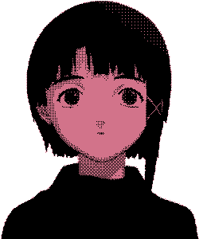

Olá estranho
Me pergunto todos os dias se estou realmente conversando, nadando pelo ar ou me afudando em meus próprios pensamentos, como um grande navio naufragado, os corais da minha angústia vão tomando conta de mim mesma.
O desespero toma conta de toda minha aura, não reajo, apenas deixo que o faça.

Até quando irei gritar ?

Vou expandindo minha solidão interna, assim como o universo o faz, crescendo para disfarçar a dor de estar próximo ou talvez perto ao fim.
Deitando sobre cadáveres, o sangue faz os palácios.